Евроштакетник на винтовых сваях — вариант, где опора закручивается в грунт и принимает нагрузку сразу: бетонирование не выполняется, ждать набора прочности нечего.
Поэтому монтаж идёт круглый год, а перепад высот на участке отыгрывается разной глубиной закручивания, а не подсыпкой. Зазор между штакетинами снижает ветровую нагрузку на опору — связка получается легче, чем глухой забор той же высоты. Замер по Москве и основной зоне области бесплатный, срок работ 2–7 дней.
Тип полотна и основание уже выбраны — этой страницей. Осталось указать размеры и стороны.
Винтовая свая — труба с лопастью, которая ввинчивается в грунт до плотного слоя. Лопасть опирается на неразработанный грунт, поэтому опора несёт нагрузку с момента закручивания. Бетонирование не выполняется: нет мокрых процессов, нет ожидания набора прочности, нет риска, что бетон схватится неравномерно. Практический итог — столбы, лаги и штакетник ставятся тем же или следующим выездом, а не через неделю.
Евроштакетник монтируется с промежутком, полотно продувается. Глухой забор той же высоты работает как парус и передаёт на опору заметно большее усилие при ветре. Именно поэтому связка «евроштакетник + свая» рабочая: опора нагружена мягче, чем под сплошным профлистом, и требования к её заглублению соответственно ниже. Конкретная длина и диаметр сваи под ваш участок — Ø 76 мм, длина 2500 мм, стенка 3,5 мм.
На участке с уклоном каждая свая закручивается на свою глубину, и верх опор выводится в нужную линию. Ленточному основанию для того же понадобилась бы ступенчатая опалубка, планировка грунта или подсыпка. Полотно ведут либо уступами по рельефу, либо по единой линии верха с разной высотой просвета снизу — выбор делается на замере, потому что он зависит от того, что важнее: вид сверху по линии забора или отсутствие щели у земли.
Закручивание не требует положительной температуры — мёрзлый верхний слой проходится. Зимний монтаж ограничивают не морозы, а состав грунта на глубине: скальные включения и строительный мусор в насыпи мешают одинаково в любой сезон. Поэтому «зимой нельзя» — миф, а «на этом участке нельзя» — вопрос, который решается на замере.
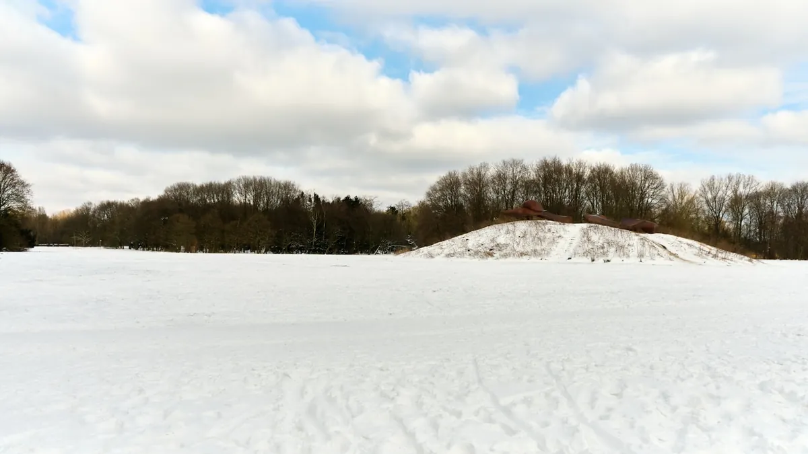
Разброс задаёт длина, количество ворот и калиток, необходимость дополнительных работ. Точный срок фиксируется после замера — вместе с комплектацией и стоимостью, в договоре.
| Полотно | Металлический евроштакетник, монтаж с зазором |
|---|---|
| Толщина металла штакетины | 0,5 мм, ГОСТ Р 52146 — проверяется микрометром при закупке |
| Покрытие | Полимерное, полиэстер, 25 мкм |
| Цвета | Серый графит, Белый, Золотой дуб |
| Высота полотна | 1,5 – 2,5 м |
| Шаг между штакетинами | 50 мм |
| Опора | Винтовая свая, Ø 76 × 2500 мм, стенка 3,5 мм |
| Шаг опор | 2,5 м |
|---|---|
| Лаги | Профильная труба 40 × 20 × 1,5 мм |
| Крепление штакетины | Вытяжная заклёпка, 4 шт. на штакетину |
| Сезон монтажа | Круглый год, включая отрицательные температуры |
| Срок работ | 2 – 7 дней |
| Гарантия | 2 года на материалы и монтаж, фиксируется в договоре |
| Оплата | Поэтапная; финальная часть — после сдачи согласованного объёма |
Параметры уточняются на замере: грунт и рельеф влияют на длину сваи и шаг опор.
Честнее сказать заранее, чем обнаружить на монтаже.
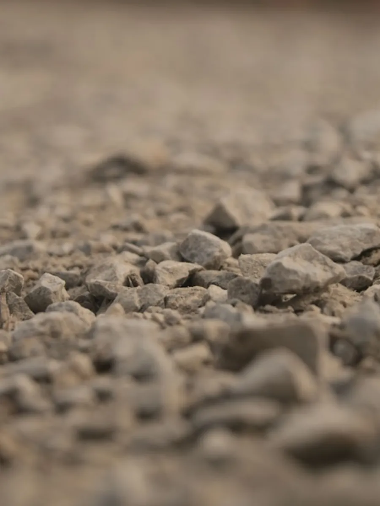
Скальный и щебенистый грунт. Лопасть не проходит плотное каменистое основание — потребуется другое решение по фундаменту.
Насыпь со строительным мусором. Свая упирается в обломок и останавливается выше расчётной отметки: несущая способность не набирается.
Коммуникации в пятне закручивания. Кабель, газ, водопровод — точки опор смещаются, схему согласуют до работ.
Подвижные и сильно обводнённые грунты. Нужен подбор длины сваи под конкретный участок, а не типовой типоразмер.
Ворота и калитки. Сами конструкции и автоматика к ним — отдельные позиции сметы.
Демонтаж старого забора. Снос, вывоз, расчистка линии и спил кустарника вдоль неё.
Дальний выезд. За пределами основной зоны обслуживания по области условия согласуются заранее.
Сопутствующее. Земляные работы под коммуникации, перенос опор освещения, восстановление газона после проезда техники.
Если грунт на участке не подходит для сваи, в той же подкатегории есть два решения.
Сплошное основание по линии забора: закрывает просвет у земли и удерживает грунт на склоне. Требует бетонных работ и паузы на набор прочности.
Евроштакетник с кирпичными столбамиКогда важен вид со стороны улицы: металлические секции между кирпичными опорами, чаще всего с ленточным основанием под всю линию.
Это одно из исполнений в подкатегории. Сравнить его с вертикальным, горизонтальным, двусторонним и шахматным монтажом, а также посмотреть отделку под дерево можно в общем разделе — заборы из евроштакетника.
Все виды евроштакетникаУточняем задачу, длину линии, адрес и удобное время выезда.
Инженер проверяет рельеф и грунт, определяет длину свай и шаг опор.
Фиксируем комплектацию, стоимость, сроки, этапы оплаты и гарантию.
Закручиваем сваи, ставим лаги и штакетник, сдаём объект.
Съёмка объектов — своя, без стока: это отдельное требование к странице. Стоком оформлены только иллюстрации в тексте.
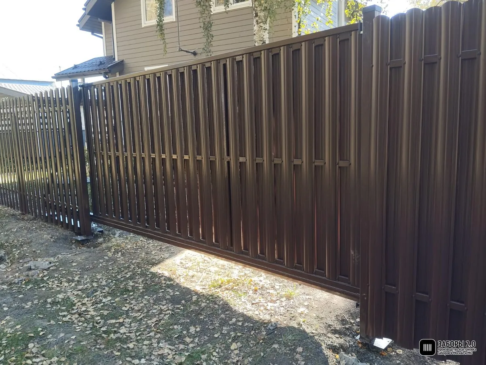
Линия по фасаду и двум боковым сторонам, откатные ворота с автоматикой. Участок с уклоном вдоль дороги — перепад отыгран разной глубиной закручивания опор.
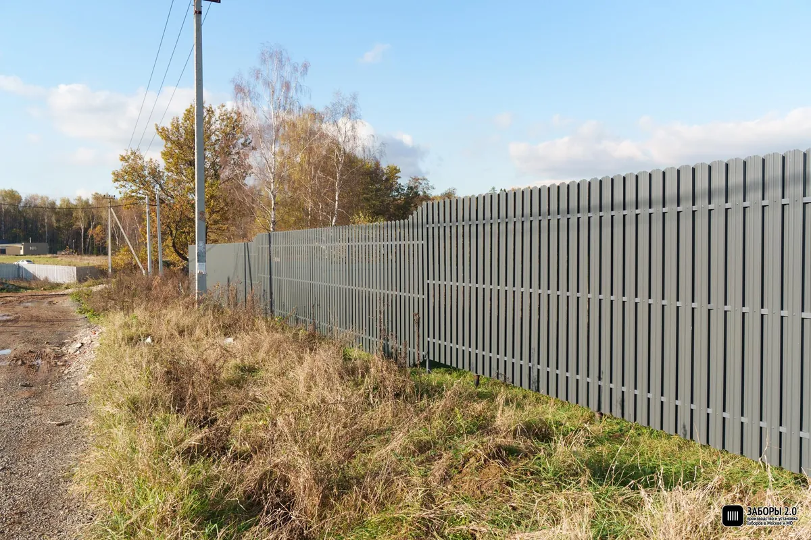
Сваи Ø 76 мм, шаг 2,5 м
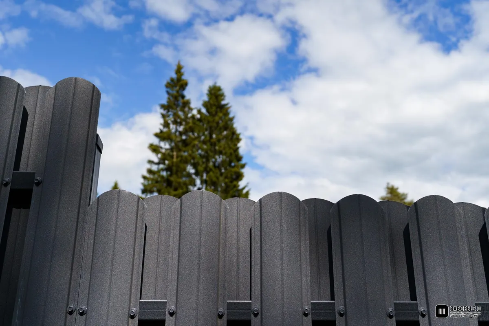
Пушкинский г.о. · 52 м · 3 дня
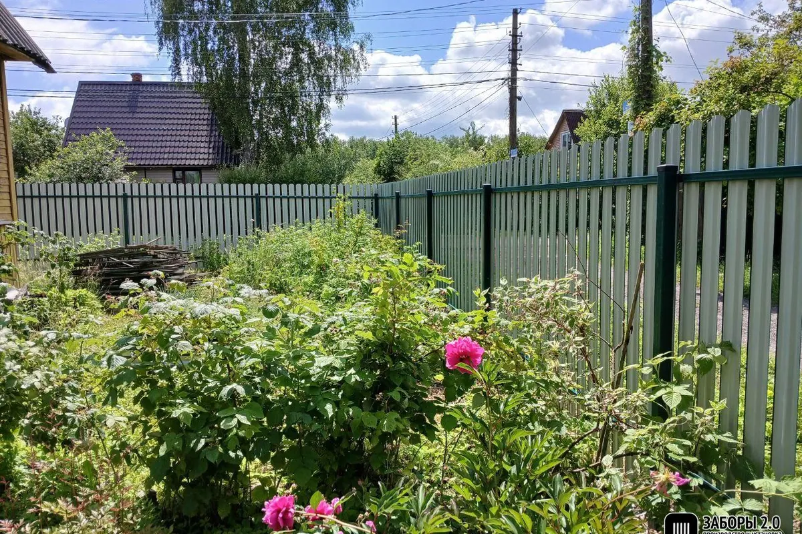
Одинцовский г.о. · 96 м · 6 дней
Инженер приедет, проверит грунт и перепад высот, определит длину свай и посчитает смету на месте. По Москве и основной зоне области — бесплатно.
Скриншоты с внешних площадок, без правок. Микроразметкой не размечаем: по отзывам о самом себе звёзды в выдаче не показываются с 2019 года, а риск санкций за такую разметку — реален.
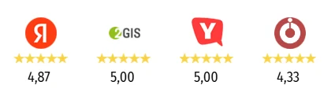
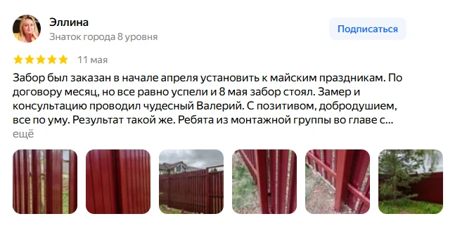
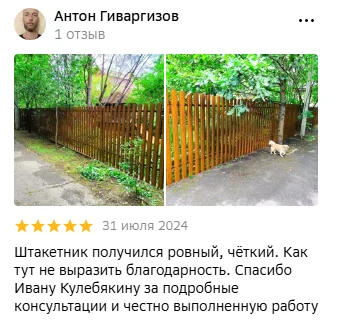
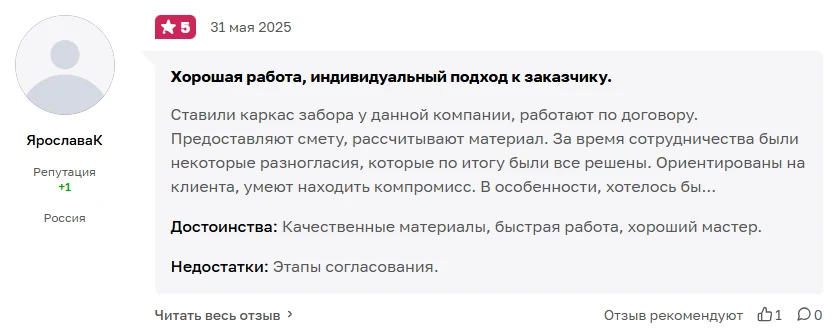
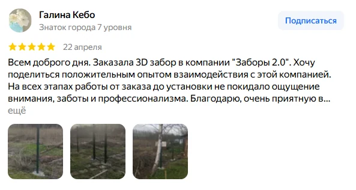
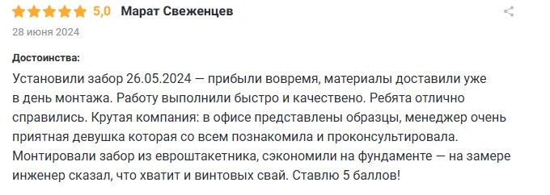
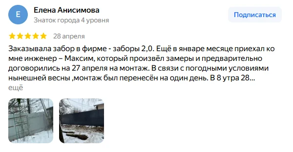
Инженер приедет, проверит грунт и рельеф, определит длину свай и посчитает смету. По Москве и основной зоне области — бесплатно.